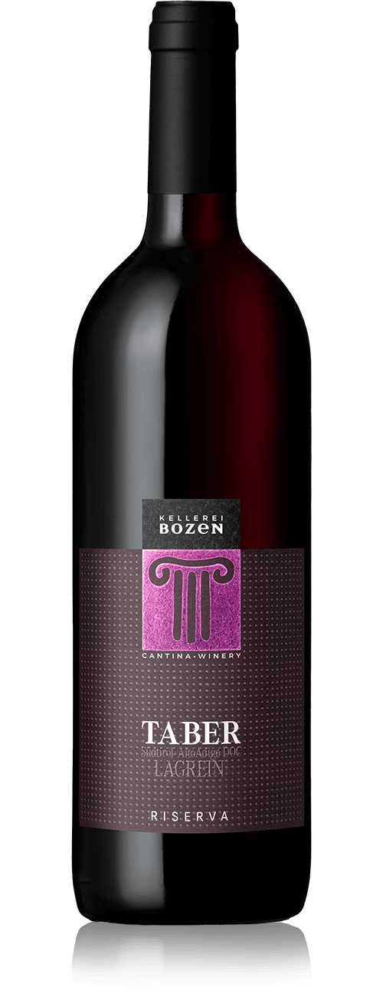

Linea Riserva
Taber

Coltivato nei vigneti che circondano Bolzano, il Lagrein è uno dei vitigni rossi di punta dell’Alto Adige. È una varietà autoctona dalla quale si ricava un vino di grande carattere.
- Varietà: Lagrein
- Zona di coltivazione: vigneti di oltre 80 anni, su terreni caldi, alluvionali a Gries/Bolzano, 250m s.l.m.
- Vendemmia: da fine settembre a meta' ottobre
- Vinificazione: fermentazione in botti di legno, affinamento per circa un anno in barriques francesi e botti grandi
- Abbinamento: con carni rosse, selvaggina e formaggi stagionati.
- Alcol: 14% vol
- Zuccheri residui: 2,0 g/l
- Caratteristiche:
Colore: rosso granato scuro impenetrabile
Bouquet: fruttato di ciliegia e frutti di bosco maturi, sentori di violetta, eucalipto e humus, speziatura di cacao e vaniglia
Sapore: intenso e persistente, con una freschezza elegante, tannini nobili e morbidi
→Acquista Vino←
Portabottiglie Dyonisos

Pratico Portabottiglie di facile installazione che permette di invecchiare fino a 14 bottiglie di rossi.
Consigli utili per il corretto invecchiamento:
- Tenere le bottiglie con un inclinazione di circa 20 gradi
Cio' evita:
- Che il tappo si secchi col tempo
- Che il vino impieghi tempo maggiore per l'invecchiamento
- Il vino ha bisogno di aria, inclinando la bottiglia si crea una bolla d'aria al suo interno
- La sedimentazione che si puo' creare nel tempo non sara' su tutta l'altezza della bottiglia
- Tenere il vino lontano da fonti luminose
- La temperatura deve essere costante e abbastanza bassa
- Umidità costante, compresa tra il 60% e max l'80%
→Acquista Portabottiglie←